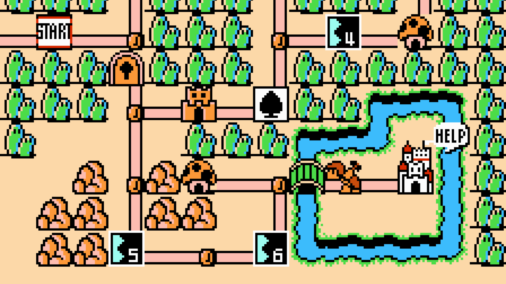

.jpg)
.webp)

❮
❯
*Super Mario Bros. 3*, released in 1988 for the Nintendo Entertainment System (NES), is one of the most beloved video games of all time. It is the third installment in the *Super Mario* series and introduced a variety of new gameplay mechanics and power-ups that expanded upon the formula established by its predecessors. The game follows Mario and his brother Luigi as they attempt to rescue Princess Toadstool from the evil King Bowser, who has taken control of the Mushroom Kingdom's seven lands. Each land is unique, featuring new enemies, obstacles, and platforming challenges that require players to use their problem-solving skills and quick reflexes. One of the standout features of *Super Mario Bros. 3* is its innovative use of the world map, which allows players to navigate between levels in a more open and strategic way than in previous titles. The game also introduced several memorable power-ups, such as the Super Leaf, which grants Mario the ability to fly, and the Frog Suit, which enhances swimming abilities. The addition of mini-games and secret items added layers of depth and replayability. With its vibrant graphics, catchy music, and timeless gameplay, *Super Mario Bros. 3* continues to be a defining entry in the history of video games, influencing countless titles that followed.